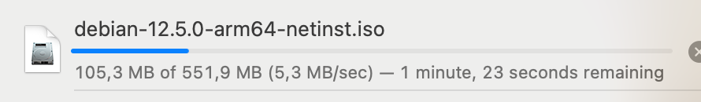
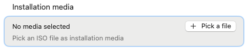
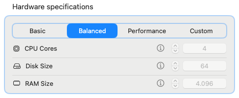
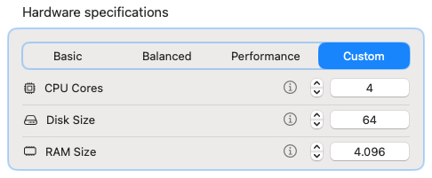

Before we start
WARNING: Most Linux distributions provide installation images for Intel processors, labeled with "amd64". These images are not compatible with VirtHandler, because your mac has an Apple Silicon processor, that uses the ARM64 architecture.


As long as it is compatible with ARM64 processors, you may use any Linux distribution of your choice. You may prefer to use one of the following recommended Linux images:
- Debian 12 - Versatile distribution, good for a moltitude of use cases.
- Fedora Workstation 40 Live - Ready to be used with an intuitive graphical interface.
- Ubuntu server 24.04 LTS - Ideal for server environments, includes lots of good server facilities.
Let's get to it!
- Download the Linux distribution of your choice, in .ISO file format
- (Optional) Usually these images aren't very big, but you can still sip off a cup of tea while you wait!
 - Start VirtHandler, and click on "+ Create a new Virtual Machine"

- Under "Operating System", select Linux as the operating system of your choice

- Under "Generics", click on "+ Pick a file" to open the Finder file picker

- Select the previously downloaded .ISO image

- Select the desired performance preset
TIP: Leave this setting on "Balanced" if you are not sure!TIP: In case of custom parameters: Depending on what kind of Linux environment you want, the minimum requirements may change drastically. To make things simple for you, VirtHandler's default values are tailored to give enough breathing room for most use cases. Also, your physical mac will not slow down due to having an excessive amount of resources allocated to the VM.
- Select the optional features to enable for your virtual machine
NOTE: All of these options are straightforward. The only one that may require some extra steps is "Enable shared directory": this option creates for you a folder that is shared between your mac and your Linux virtual machine, allowing you to transfer documents and other files facilitating your work. To know more on how to use this feature keep reading!

- When you are satisfied with your options, click on Confirm and Create

- Select your newly created virtual machine from the menu on your left
- Now you can start it using the button in the top right corner

- Now you can start it using the button in the top right corner
- Profit
A sidenote on the installation process
Every Linux distribution out there provides their own installer, unfortunately VirtHandler cannot automate the process for you. However, don't be scared to try and make mistakes, after all it's just a virtual machine, you can scrap it and start from scratch!
Recommendation for advanced users
To take a look at more advanced configuration steps and take advantage of Rosetta 2, along with the shared directory, click on this link